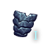

Template:Mutation
This template can be used to generate icons for space fauna components and weapons (mutations). Use {{Component}} for non-Space Fauna and core components.
Mutation images can be found here: Category:Mutation icons
Parameters
| Parameter | Description | Required | Default |
|---|---|---|---|
| 1 | Mutation icon name, minus "mutation" | required | none |
| 2 | Localized name, if different | optional | none |
| type | Mutation type, one of:
Also functions as page link selector |
optional | none |
| slot | Mutation size, any of:
|
optional | a for utility type
s for weapon |
| w | Sets icon size | optional | 58px |
| iconify | if set to "yes", appends text of parameter 2 or 1 | optional | none |
Examples
| Wikitext | Procudes |
|---|---|
{{Mutation|Berserker Glands|type=utility}} |
 
|
{{Mutation|Berserker Glands|type=utility|iconify=yes|w=30px}} |
|
{{Mutation|Energy Siphon|type=weapon}} |
 
|
{{Mutation|Nanocomposite Carapace 1|Nanocomposite Carapace|slot=m|type=utility|iconify=yes|w=30px}} |
 |
{{Mutation|Null Void Siphon|slot=x|type=weapon|iconify=yes}} |
 Null Void Siphon Null Void Siphon
|
{kind=link}
{kind=link}
{kind=link}